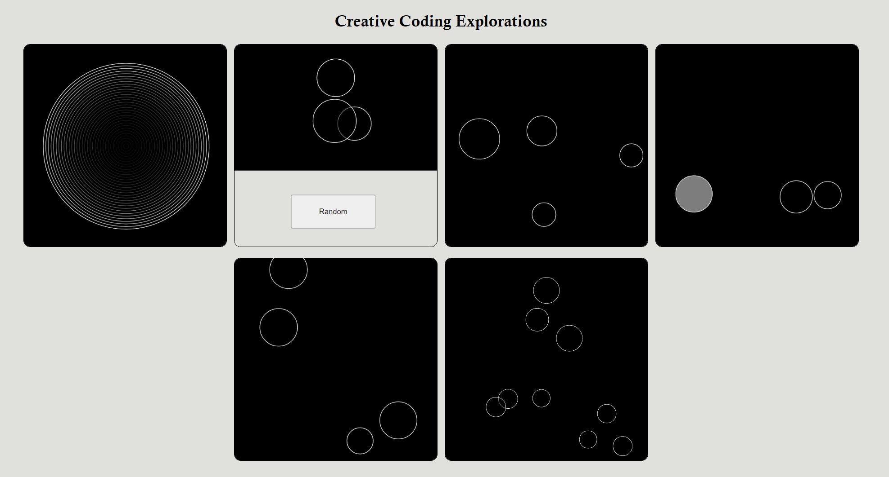
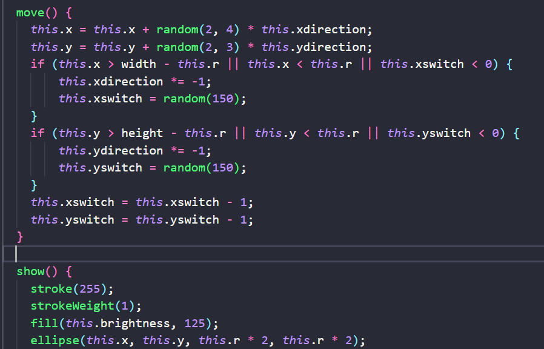

Overview and Usage
In this project, I made several sketches with p5.js from simple to complicate
The first one is a static sketch, the second one could random the shape when
a button is clicked, the third one is an infinite loop, the fourth one is an
interactive sketch, the fifth one could make sound when interacted, the sixth
one is both interactive and could generate sound.
To access the gallery website, click the Image below.

Development Process
-
I have gone through the p5.js tuturial website and watched several videos on youtube
to have an basic undersanting of p5.js.
-
Then I started to browse all the examples given in the assignment page to inspire my own idea.
-
Finally, I created my own sketches with the help of the tuturials and the example code
provided by the tuturial maker.

Issue Deep-Dive
-
The biggest problem I have encountered is the utilization of the constructor funtion of
JavaScript. It is similar to creating objects in the coding languages I previously learned
but there are still some differences that I need to pay attention to.
-
To solve this, problem, I watched the tuturials on youtube and try to write an object by myself.
I still made several mistakes such as forget to add "this" when calling the variables.
Ideas and Future
-
Add a new feature that could enable the bubbles to bumb with each other and change the direction.
-
Add more options that allows the user to adjust the speed of the bubbles, record the times that
the users successfully clicked on the bubble in a certain amount of time and output a score.
With these features, this sketch could be called a simple game.
Kudos